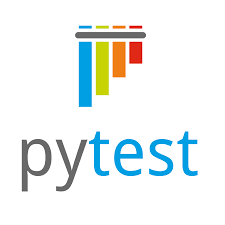
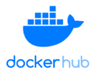

What is Continuous Deployment (CD) ?

whenever DevOps is mentioned the first 2 keywords that come to mind are automation and CI/CD pipelines and in this workshop we will focus on the CD (Continuous Deployment) part.
Continuous deployment is a strategy for software development and releases in which every code change is automatically run through a pipeline of tests and inspections before being pushed into production (ressource : techtarget)
A simple demonstration of the workings of a CD pipleline


Test
{{ stages.test.status }}
Build
{{ stages.build.status }}
Deploy
{{ stages.deploy.status }}
Monitor
{{ stages.monitor.status }}
JUnit is a unit testing framework for Java programming language
testing
{{ steps.Junit.status }}
Docker Hub is a container registry built for developers and open source contributors to find, use, and share their container images

building artifact and storing
{{ steps.dockerhub.status }}
Docker is a suite of software development tools for creating, sharing and running individual containers; Kubernetes is a system for operating containerized applications at scale


preparing docker containers
{{ steps.docker.status }}
orchestrating with kubernetes
{{ steps.kubernetes.status }}
Prometheus collects rich metrics and provides a powerful querying language; Grafana transforms metrics into meaningful visualizations


configurating Prometheus
{{ steps.prometheus.status }}
Set up grafana
{{ steps.grafana.status }}


A step by step guide

This is what your repository should look like at the end

the dockerfile

this is your staging deployment kubernetes configuration file k8s/staging-deployment.yaml

this is your production deployment kubernetes configuration file k8s/production-deployment.yaml

https://www.mediafire.com/file/4jm5a7qg34gglp1/cd-pipeline.yml/file
this is your GitHub Actions Workflow configuration file .github/workflows/cd-pipeline.yml

Setting Up GitHub Secrets

Ensure you have a simple Python web application to test the pipeline. For example, create a main.py file inside the app directory

requirements.txt file

Commit your changes and push to the main branch

Install Prometheus and Grafana using Helm

Add this configuration to your Prometheus values.yaml or as a ConfigMap

Access Grafana